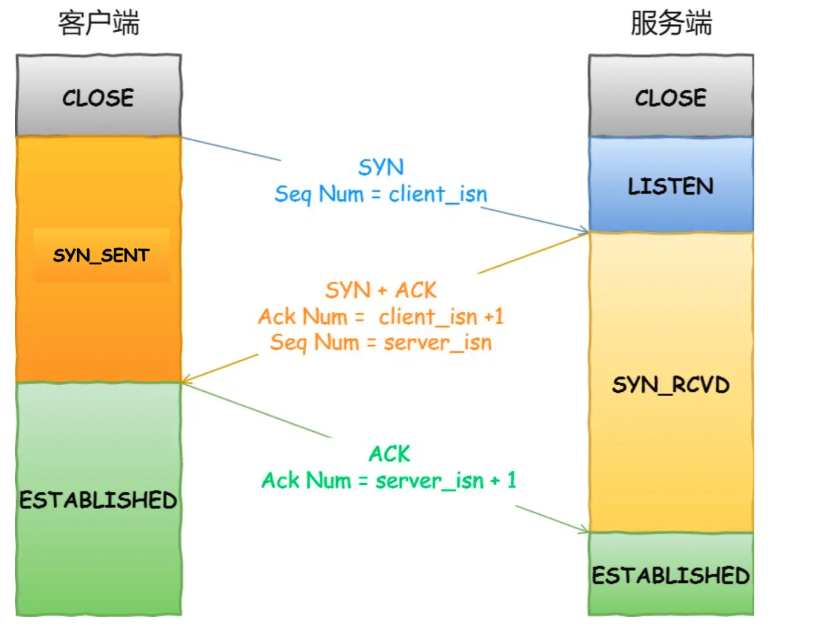
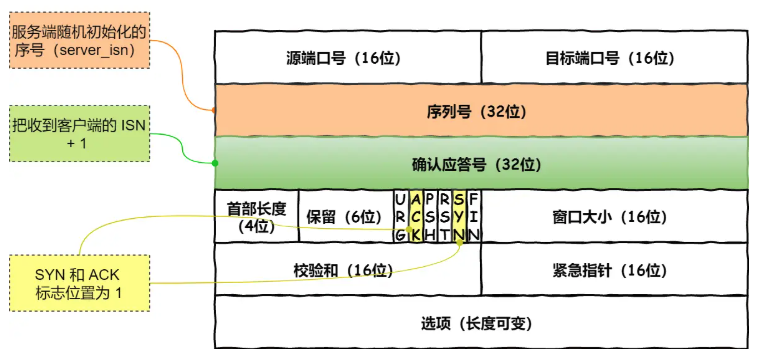

面试
传输层
Q1 请详细介绍一下 TCP 的三次握手机制，为什么要三次握手?

- 为什么需要握手?
- 为什么是三次?
我们一切从本质出发，就是 TCP 协议的特点就是 可靠性.那么为了保证消息接受的可靠性。也就是说需要双方确认，也就是一方发送消息，要等到接收到接收方发来的 reply之后，这才说明这一段消息是发送成功的，值只要它没有 reply,那么发送方就一定要一直发，这就是 可靠性。因此我们很自然的知道，如何确认我们的消息已经成功的发出去了？我们选择了给传输的消息进行编号，也就是说让每一段消息都有一个序列号。 TCP是双工，也就是客户端和服务端都可以进行发送请求，在大家互相发的过程中，我们就需要序列号来进行确认，否则没有办法知道我们应该接收到的是谁发来的什么消息。序列号不能从 0 开始的，是一个 32 位的随机数字，所以我们需要一个 32 位的数字来进行确认。这就是为什么我们需要三次握手的原因。
为什么要3次握手呢？而不是4次呢？ 首先，我们在
close connection的时候，是允许半打开状态，也就是说可以只有一方关闭，另一方还可以继续发送消息。server说我关链接了，但client没有关，是可以继续长时间的给server发送消息的。在 Linux操作系统中，不会对半打开状态设置超时时间，但是握手的时候，不允许出现半打开状态，所以我们需要三次握手。

TCP 协议的特点就是 可靠性 和 面向连接 上面已经介绍了可靠性。那么我们的握手过程其实就是建立连接的一个过程。
前两次握手的目的是为了建立连接，所以不能携带数据，第三次握手是可以携带数据的。

下面来具体讲一下这个过程:
-
Step1 : 首先
CLient和Sever都处于CLOSED状态，先是服务器主动监听某个端口,处于LISTEN状态。表示服务器开始等待客户端的连接请求。 -
Step2 :
Client开始初始化一个32位的序列号，作为SYN包的序列号，然后发送一个SYN(Synchronize 同步) 包给Server，表示我要连接你，同时我给你一个序列号，你给我一个序列号。此时 客户端处于SYN-SENT状态 -
Step3 : 服务端接收到了客户端的
SYN报文，首先自己也随机初始化自己的序列号server_ISN,将序列号填入 TCP 首部中。并且把TCP首部的确认应答号字段填入SYN+1.看上图的部首中具有的两部分，用于确认序列号和确认应答号。并且把SYN 和 ACK包都置1.然后把这个包发送给客户端。此时服务端处于SYN-RECEIVED状态 -
Step4 : 客户端接收到了服务端的
SYN+ACK包，然后将ACK置1，同时将ACK包的序列号填入server_ISN+1，然后发送给服务端。此时客户端处于ESTABLISHED状态
这里 ACK 的作用:
-
- 保证连接的可靠性
-
- 确保双方都清楚知道对方的状态
- 3.防止 SYN 重传，如果没有
ACK确认，客户端可能误以为服务端没有收到SYN包，会重发SYN包，这样会导致服务端收到多个SYN包，这样就会导致冗余和混乱。